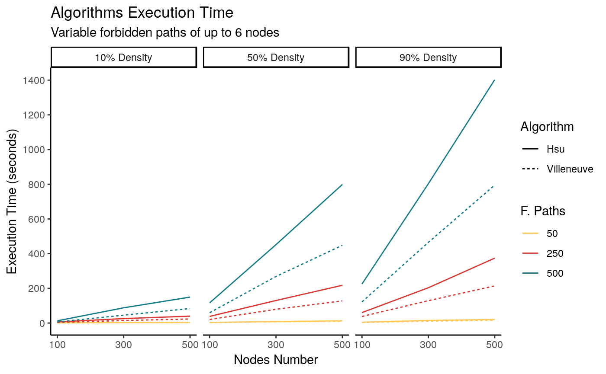

To evaluate rsppfp package, several examples were benchmarked. This is run using 27 randomly generated graphs, which result from the combination of the following values:
size(N) = {100, 300, 500}
size(F) = {50, 250, 500}
size(d) = {0.1, 0.5, 0.9}
A total of 27 graphs were generated using igraph’s erdos.renyi.game(...), and the forbidden paths were constructed with their random_walk(…) function; results were limited to prevent walks of less than three nodes.
# Checks if the path is part of any row of the forbidden subpaths.
# Returns the logical comparison of the evaluation.
already_exists <- function(fp, path) {
return( any(
apply(fp, 1, function(x) str_detect(paste(x, collapse=","), paste(path, collapse=",")))
))
}
# Checks if a forbidden paths contains a subpath of another forbidden path.
# Returns the logical result of the comparison.
has_subpath <- function(fp, path) {
# If the length if 3, evaluate as-is
if(length(path) == 3) {
return(already_exists(fp, path))
}
# Otherwise
else {
# We need to generate subpaths of length three
for(i in 1:(length(path) - 2)) {
# Check if the value is a subpath. If it is, return immediately
if( already_exists(fp, path[i:(i+2)]) ) return(TRUE)
}
# If we got here, return false
return(FALSE)
}
}
# Creates random graphs using a specific seed.
# seed <- 1111
get_random_graphs <- function(seed, directory) {
# Set a random seed
set.seed(seed)
# Prepare values
nodesNumbers <- c(100, 300, 500)
densities <- c(0.1, 0.5, 0.9)
fpathsNumber <- c(50, 250, 500)
# Create the dataframe
graphsInfo <- data.frame(
nCount = numeric(),
nCountReal = numeric(),
aCount = numeric(),
density = numeric(),
fCountTheoric = numeric(),
fCountReal = numeric(),
gfile = character(),
fFile = character(),
stringsAsFactors = FALSE
)
# Loop through the node count
for(nodeCount in nodesNumbers) {
# Loop through the density
for(d in densities) {
# Get the arc count
arcsNumber <- (nodeCount ^ 2) * d
# Create a graph
graphI <- erdos.renyi.game(nodeCount, arcsNumber, directed = TRUE, type = "gnm")
# Remove nodes without edges
graphI <- delete_vertices(graphI, V(graphI)[ degree(graphI, v = V(graphI), mode = "total") == 0])
giDF <- as.data.frame(get.edgelist(graphI)) %>% `colnames<-`(c("from", "to"))
# Loop on the number of forbidden paths
for(fpCount in fpathsNumber) {
# Get the starting nodes for forbidden paths
randomStartNodes <- sample(x = V(graphI), size = fpCount, replace = TRUE)
fpDF <- data.frame(matrix(ncol = 6, nrow = 0))
# For each element there
for(rsn in randomStartNodes) {
# Get a random number of steps
rSteps <- sample(3:6,1)
# Create a random walk through the graph
rWalk <- random_walk(graph = graphI, start = rsn, steps = rSteps,
mode = "out", stuck = "return") %>% as.vector()
# If it is at least 3 nodes long and has no subpaths
if(length(rWalk) >= 3 & !has_subpath(fpDF, rWalk) ) {
# Then add it to the list
fpDF[nrow(fpDF) + 1, ] <- structure("length<-"(rWalk, 6), class = class(rWalk))
}
}
# Record the files
gFileName <- paste0(directory, "/", nodeCount, "Graph_", (d * 100), "pDense_", fpCount, "fp_Graph.csv",
collapse = "")
fFileName <- paste0(directory, "/", nodeCount, "Graph_", (d * 100), "pDense_", fpCount, "fp_Paths.csv",
collapse = "")
write.csv(file = gFileName, x = giDF, row.names = FALSE)
write.table(fpDF, fFileName, na = "", row.names = FALSE, col.names = FALSE, append = TRUE, sep = ",")
# Append to the dataframe
graphsInfo[nrow(graphsInfo) + 1, ] <-
list(nodeCount, length(V(graphI)), arcsNumber, d, fpCount, nrow(fpDF), gFileName, fFileName)
}
} # End densities loop
} # End arc count loop
# Return the values
return(graphsInfo)
}Figure 1 shows the results for digraphs of each density. This was executed on a computer with an Intel I7-4790 CPU at 3.6Ghz, with 4GB of RAM, using Linux Ubuntu 16.04 as the operating system. Three cores out of four were used in all of the transformations.

As can be seen, in all situations the more general algorithm (Hsu’s) takes longer to complete, though this difference increases with the number of forbidden paths and density. It is worth mentioning that this is expected behavior, as the transformation logic iterates on the forbidden paths F –each one needs to be individually evaluated to add new nodes and arcs to the graph. Because of its logic, Hsu’s backward construction always produces a smaller gStar with less nodes and arcs, while Villeneuve’s algorithm is slightly faster; this difference is noticeable for larger values of F.